Artikel - Register "Lager" - Unterregister "Einstellungen"
Das Unterregister "Einstellungen" enthält sämtliche Werte bzw. Einstellungen, die in der WinLine Lagerverwaltung eine Rolle spielen.
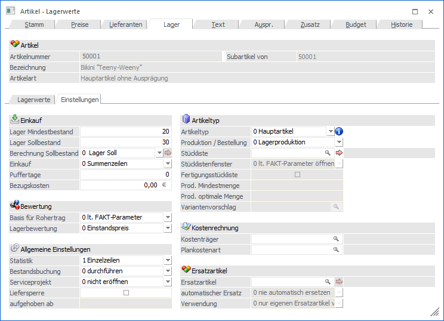
Folgende Eingabefelder, Einstellungen und Informationen stehen zur Verfügung:
Einkauf
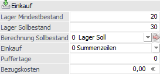
Ø Lager Mindestbestand
An dieser Stelle wird der Mindestbestand des Artikels hinterlegt. Wird der Mindestbestand unterschritten (unter Berücksichtigung aller bis zu einem bestimmten Stichtag noch fälligen Vorgänge), so ergänzt der automatische Bestellvorschlag die Lagermenge automatisch auf den "Lager Sollbestand".
Ø Lager Sollbestand
In dieses Eingabefeld wird der Sollbestand des Artikels hinterlegt. Wird der Mindestbestand unterschritten (unter Berücksichtigung aller bis zu einem bestimmten Stichtag noch fälligen Vorgänge), so ergänzt der automatische Bestellvorschlag die Lagermenge automatisch auf den "Lager Sollbestand".
Hinweis
Neben der manuellen Hinterlegung des Sollbestands stehen mit Hilfe der Auswahl "Berechnung Sollbestand" weitere Berechnungsmethoden zur Verfügung.
Ø Berechnung Sollbestand
Mit dieser Einstellung kann festgelegt werden, wie der "Lager Sollbestand" berechnet werden soll; d.h. in weiterer Folge im "Bestellvorschlag erstellen" herangezogen bzw. das Feld "Lager Sollbestand" aktualisiert werden soll. Folgende Einstellungen stehen hierbei zur Auswahl:
ü 0 - Lager Soll
Mit dieser
Einstellung wird immer der Wert aus dem Eingabefeld "Lager Sollbestand"
herangezogen.
ü 1 -12 Durchschnitte der letzten x
Monate
Mit dieser Einstellung werden die verkauften Mengen der letzten x
Monate (lt. Verkaufsstatistik) zur Berechnung herangezogen.
Hinweis
Wird im Menüpunkt "Bestellvorschlag erstellen" der Button "Sollbestand berechnen" gedrückt, so wird dieser anhand der hier getroffenen Monatseinstellung berechnet und ins Eingabefeld "Lager Sollbestand" (nicht editierbar) zurückgeschrieben.
ü 99 - manuelle Eingabe
Mit
dieser Einstellung wird ein weiteres Eingabefenster geöffnet (Anwählen des
"Pfeil"-Buttons  neben dem
Eingabefeld), in welchem die Sollbestände mit Datumseingrenzung eingegeben
werden können.
neben dem
Eingabefeld), in welchem die Sollbestände mit Datumseingrenzung eingegeben
werden können.
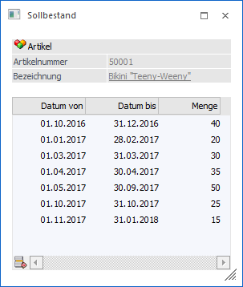
Hinweis
Wird im Menüpunkt "Bestellvorschlag erstellen" der Button "Sollbestand berechnen" gedrückt, so wird dieser anhand der Einstellung in dieser Tabelle berechnet und ins Eingabefeld "Lager Sollbestand" (nicht editierbar) zurückgeschrieben.
Ø Einkauf
Mittels dieser Einstellung kann definiert werden, ob im "automatischen Bestellvorschlag" (Bestellvorschlag erstellen) für die gesamte Bestellmenge eine Dispozeile erstellt werden soll oder ob dies pro Kundenauftrag erfolgen soll.
ü 0 - Summenzeile
Durch die
Auswahl "Summenzeile" (Standardvorbelegung) wird beim Erstellen eines
Bestellvorschlages für die gesamte Bestellmenge eine Dispozeile erzeugt.
ü 1 - Einzelzeilen
Durch die
Option "Einzelzeilen" wird für jeden Kundenauftrag eine eigene Dispozeile
erzeugt. Dadurch ist es auch möglich, dass im Menüpunkt "Bestellvorschlag
bearbeiten" zusätzlich die Kundennummer, der Kundenname und die Auftragsnummer
des Kundenauftrags angezeigt werden. Beim Erzeugen einer Lieferantenbestellung
wird jedoch wieder eine einzige Lieferantenbestellung erzeugt. D.h. anders als
bei auftragsbezogenen Bestellungen wird die Option "eine Bestellung pro Kunde"
nicht berücksichtigt.
Ø Puffertage
Mit der Definition von Puffertagen kann die bestehende Logik des automatischen Einkaufs (Programm "Bestellvorschlag erstellen") erweitert werden:
ü Bei der Ermittlung der zu bestellenden Artikel werden die hinterlegten Puffertage auf die Wiederbeschaffungstage des jeweiligen Lieferanten hinzuaddiert.
ü Bei Nutzung der Option "Lieferdatum aus Auftrag übernehmen" des Bestellvorschlags, wird das Lieferdatum um die hinterlegten Puffertage reduziert.
Achtung
Die Puffertage (FAKT-Parameter oder Artikelstamm; siehe auch "Hinweise") werden automatisch für all jene Artikel genutzt, welche im Feld "Einkauf" die Option "1 - Einzelzeilen" geschlüsselt haben!
Hinweis
Folgende Punkte sind bezüglich Puffertagen zusätzlich zu beachten:
ü Eine negative Eingabe von Puffertagen ist nicht möglich.
ü Die im Artikel getroffene Einstellung übersteuert die globale Einstellung für Einkaufs-Puffertage, welche in den FAKT-Parameter (Bereich "Einkauf") hinterlegt werden kann.
ü Wenn ein Wert von 0 als Puffertage im Artikelstamm hinterlegt ist, gilt dieses als "keine Eingabe", d.h. der Wert aus den FAKT-Parametern wird ohne Änderung für die Berechnung des Liefertermins herangezogen.
ü Die Einstellungen für Einkaufs-Puffertage werden im Bestellvorschlag sowohl bei Einkaufsartikeln (Artikeltyp "0 - Hauptartikel"), als auch Produktionsartikeln (Artikeltyp "2 - Produktionsartikel") berücksichtigt.
Ø Bezugskosten
Für die Bezugskostenberechnung gibt es zwei Möglichkeiten:
ü In der Artikelgruppe wird ein Bezugskosten-Prozentsatz eingegeben. Auf Basis des Einkaufpreises werden die Bezugskosten ermittelt.
ü Pro Artikel kann im Feld "Bezugskosten" (Register "Lager", Unterregister "Einstellungen") der Wert der Bezugskosten hinterlegt werden, wobei der Wert für eine Einkaufscolli gilt (wurde keine Einkaufscolli eingetragen, so bezieht sich der Wert auf ein Stück).
Hinweis
Falls kein Betrag hinterlegt wird, gilt der Prozentsatz aus der Artikelgruppe. Des Weiteren können die Bezugsnebenkosten in der Belegerfassung pro Artikelzeile nochmals überschrieben werden (Spalte "Bezugskosten").
Bewertung
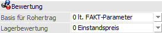
Ø Basis für Rohertrag
In den FAKT-Parametern im WinLine Start kann die Basis für die Rohertragsermittlung hinterlegt werden. Dies gilt standardmäßig für alle Artikel, es sei denn es wird hier im Artikelstamm eine andere Basis für einen Artikel ausgewählt. Es stehen folgende Möglichkeiten zur Verfügung:
ü 0 - lt. FAKT - Parameter
ü 1 - Einstandspreis
ü 2 - letzter Einkaufspreis
ü 3 - niedrigster Einkaufspreis
ü 4 - letzter Einkaufspreis + Bezugskosten
Hinweis
Es werden die Bezugskosten pro Stück berücksichtigt, wenn im Feld "Bezugsnebenkosten" des Artikelstamms (Register "Lager" - Unterregister "Einstellungen") ein Eintrag vorhanden ist. Andernfalls wird der BNK-Prozentsatz aus der Artikelgruppe berücksichtigt.
ü 5 - allgemeiner Einkaufspreis
ü 6 - Bewertungspreis der Komponenten (steht nur bei Handelsstücklistenartikel zur Verfügung)
Hinweis
Wird diese Option verwendet, so wird im Belegerfassen der Bewertungspreis der Komponenten und nicht die Einstellung des Stücklistenartikels herangezogen
Ø Lagerbewertung
An dieser Stelle kann hinterlegt werden, aufgrund welcher Basis die Lagerbewertung erfolgen soll. Dies hat nur Auswirkung auf die Darstellung der Artikellisten. Folgende Möglichkeiten stehen zur Verfügung:
ü 0 - Einstandspreis
ü 1 - letzter Einkaufspreis
ü 2 - niedrigster Einkaufspreis
ü 3 - letzter Einkaufspreis + Bezugskosten
Hinweis
Es werden die Bezugskosten pro Stück berücksichtigt, wenn im Feld "Bezugsnebenkosten" des Artikelstamms (Register "Lager" - Unterregister "Einstellungen") ein Eintrag vorhanden ist. Andernfalls wird der BNK-Prozentsatz aus der Artikelgruppe berücksichtigt.
ü 4 - allgemeiner Einkaufspreis
Allgemeine Einstellungen
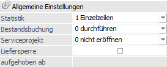
Ø Statistik
Das Statistikkennzeichen dient für die Erstellung der Verkaufsstatistik. Durch Anklicken des Pfeils bzw. durch die Tastenkombination ALT + Pfeil-nach-Unten können alle Möglichkeiten aufgelistet werden.
ü 0 - Keine Statistik
Der Artikel
wird in der Verkaufsstatistik nicht berücksichtigt.
ü 1 - Einzelzeilen
Jede
Fakturenzeile, die für den Artikel erstellt wurde, wird vollständig in die
Verkaufsstatistik aufgenommen (Detailinformation).
ü 2 -Summenzeilen
Die
Fakturenzeilen des Artikels werden zu Artikelgruppenwerten verdichtet
(komprimierte Verkaufsinformation).
Im Belegerfassen kann in der Belegmitte dieses Statistikkennzeichen noch geändert werden.
Hinweis
Die Spalte "Statistik" wird standardmäßig nicht angezeigt, sondern muss im Kontextmenü über "Spalten anzeigen/verstecken" eingeblendet werden.
Ø Bestandsbuchung
Hier kann eingestellt werden, ob beim Rechnen einer Faktura oder im Zuge der Lagerneubewertung eine Bestandsbuchung für den Artikel
ü 0 - durchgeführt
ü 1 - nicht durchgeführt
ü 2 - die Buchungsoption der Komponenten berücksichtigt
werden soll. Voraussetzung beim Rechnen einer Faktura dafür ist, dass in der verwendeten Belegart eine Maskierung für die Bestands- bzw. Einsatzbuchung hinterlegt wurde.
Ø Serviceprojekt
Über dieses Kennzeichen wird gesteuert, ob für diesen Artikel ein Serviceprojekt eröffnet werden kann (nähere Informationen hierzu entnehmen Sie bitte dem Kapitel "Serviceprojekte - Zusammenfassung").
Ø Liefersperre
Durch Aktivierung dieser Option wird der Artikel mit einer Liefersperre versehen. In dem folgenden Feld "aufgehoben ab" kann wiederum ein Datum hinterlegt werden, ab wann die Liefersperre nicht mehr gilt, d.h. aufgehoben wird.
Hinweis
In welchen Belegstufen die Liefersperre greifen soll, wird über die Belegoptionen (WinLine FAKT - Stammdaten - Belegstammdaten - Belegoptionen - Register "Liefersperre") definiert. In der anschließenden Belegerfassung erfolgt die Prüfung der Liefersperre unter Berücksichtigung des jeweiligen Belegdatums.
Beispiel
Gemäß einer vertraglichen Vereinbarung darf ein neues Produkt (im Artikelstamm seit dem 31.08.2016) erst ab dem 01.10.2016 an Kunden geliefert werden, die Erfassung von Angebote bzw. Aufträgen im September ist aber gewünscht. Um dieses zu gewährleisten wird bei dem Artikel eine Liefersperre bis zum 01.10.2016 hinterlegt und die Prüfung der Liefersperre auf die Belegstufen "Lieferschein" und "Faktura" beschränkt.
Artikeltyp
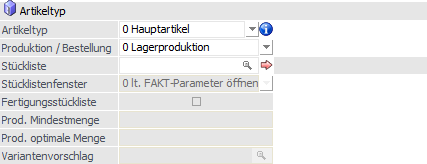
Ø Artikeltyp
An dieser Stelle wird der Typ des Artikels definiert. Hierbei ist zu beachten, dass eine Umstellung des Artikeltyps in der Regel nicht mehr möglich ist, sobald der Artikel in Belegen verwendet wurde!
ü 0 - Hauptartikel
Der Artikel
wird als normaler Lagerartikel geführt. D.h. ein Hauptartikel wird eingekauft
und ohne Weiterbearbeitung verkauft.
ü 1 - Lagerneutraler Artikel
Der
Artikel wird behandelt wie ein normaler Artikel, d.h. es werden auch Umsätze und
Mengen mitgeführt. Der Unterschied zu einem Hauptartikel besteht darin, dass ein
lagerneutraler Artikel im Bestellvorschlag nicht berücksichtigt und bei
"Kundenbestellungen bearbeiten" immer ausgeliefert wird (da keine
Lagerstandsunterschreitung geprüft wird).
Außerdem können lagerneutrale
Artikel bei diversen Auswertungen ausgenommen werden. Lagerjournalzeilen werden
auch für den lagerneutralen Artikel mitgeschrieben, damit ersichtlich ist, was
von diesem Artikel bewegt worden ist (Verkäufe, etc.).
In der Praxis werden
Artikel wie "Dienstleistungen", "Frachtkosten" oder "Versicherungskosten" als
lagerneutral definiert.
ü 2 - Produktionsartikel
Der
Artikel wird (in der Regel) nicht von einem Lieferanten zugekauft, sondern im
Modul WinLine PPS aus anderen Artikeln produziert (mehrstufige
Stücklistenproduktion). Für diese Artikel muss im Feld "Stückliste" die
entsprechende Produktionsstücklistennummer eingetragen werden.
ü 3 - Handelsstückliste
Der
Artikel wird mit dem Typ "3 - Handelsstückliste" geschlüsselt, wenn bei dem
aktiven Artikel eine Handelsstückliste hinterlegt werden soll. Dieser Artikeltyp
wird in der Regel dann gewählt, wenn es sich um einen Artikel handelt, welcher
sich aus mehreren anderen Hauptartikeln zusammensetzt.
Hinweis
Nähere Informationen zur Handelsstückliste und deren Anlage entnehmen Sie bitte dem Kapitel Die Handelsstückliste.
ü 4 - Rezeptartikel
Es handelt
sich um einen Artikel, der sich aus mehreren Hauptartikeln zusammensetzt. Bei
Auswahl dieses Typs können für gebuchte Artikel weitere Buchungszeilen erzeugt
werden. Die Generierung der Buchungszeilen erfolgt über den Menüpunkt
"Artikeljournal buchen".
Im Feld "Stückliste" kann die dazugehörige
Handelsstückliste zugeordnet bzw. angelegt werden.
Zu beachten ist bei der
Zuordnung der Bestandteile (Stücklistenartikel), dass 2-Mengen-Artikel nicht
verwendet werden können und die Ausprägung eines Ausprägungsartikels bereits im
Stücklistenstamm vorzunehmen ist. Eine nachträgliche Auswahlmöglichkeit der
Ausprägung - in der Belegerfassung bzw. beim Buchen der Stücklistenartikel - ist
nicht möglich (weitere Details zur Funktionalität werden im Kapitel
"Artikeljournal buchen" erläutert).
ü 5 - Package-Artikel
Bei einem
Package-Artikel handelt es sich um grundsätzlich einen Artikel, welcher in der
Belegerfassung erfasst werden kann, die eigentlichen Buchungen (Lager,
Statistik, Übergabe an die WinLine FIBU) aber über seine Komponenten erzeugt
werden. Diese Komponenten werden wiederum über Artikelmakros (Register "Text")
zugeordnet. D.h. der Package-Artikel dient als optisches Bindeglied der
Komponenten (ohne Lagerstandsprüfung), kann Daten an die Komponenten
weiterreichen (z.B. Preise oder Mengen - nähere Informationen entnehmen Sie
bitte dem Kapitel "Makros") und wird mengentechnisch in der Statistik
geführt.
Hinweise
Folgende Punkte sind bei Package-Artikeln zu beachten:
ü Ein Package-Artikel darf nicht als Hauptartikel mit Ausprägung angelegt werden.
ü Das hinterlegte Makro darf keine Hauptartikel mit Ausprägungen beinhalten.
ü Das hinterlegte Makro sollte beim Aktualisieren des Preises beim Makroartikel auf Typ "3 - Änderungen immer übernehmen" eingestellt sein und bei den Artikeln im Makro sollte die Menge1 auf Typ "1 - aus dem Makroartikel übernehmen" eingestellt sein.
ü Package-Artikel sollten nicht in einem Belegendmakro verwendet werden.
ü Handelsstücklisten dürfen nicht Bestandteil eines Package-Artikels bzw. des jeweiligen Makros sein.
ü Bei Package-Artikel sollten keine Zeilen- / Belegformeln verwendet werden.
ü Der Package-Artikel darf nicht in Belegen für Teil- und Schlussrechnungen (WinLine ANAB) vorkommen.
ü Aufgrund der Berechnung der Preise kann es zu Rundungsdifferenzen zwischen Gesamtpreis Package-Artikel und Einzelkomponenten kommen!
ü Package-Artikel unterstützen keine Teillieferung, d.h. dürfen auch nicht in Aufträgen vorhanden sein, welche teilgeliefert werden.
ü Im Programm "Kundenbestellungen bearbeiten" wird der Package-Artikel des Kundenauftrags angezeigt, wobei eine Teillieferung nicht möglich ist. Die Komponenten des Package-Artikels können wiederum über das Symbol angezeigt werden. Hierbei werden die Lagerbestände der einzelnen Komponenten mit 0 angezeigt.
Ø  Beleginfo
Beleginfo
Sobald der Artikel in Belegen vorkommt ist eine Umstellung des Artikeltyps in der Regel nicht mehr möglich. Über die Anwahl des Buttons "Beleginfo" wird die "Artikel Info" geöffnet und dort die letzten Belege dargestellt, in welchen der Artikel enthalten ist.
Ø Produktion / Bestellung
Mit Hilfe dieser Einstellung kann die Art der Disposition des Artikels bestimmt werden, wobei folgende Möglichkeiten zur Verfügung stehen:
ü 0 - Lagerproduktion
Es wird
beim Druck eines Auftrages eine Dispozeile für den Artikel geschrieben. Über das
Modul Einkauf können anschließend Lieferantenbestellungen erzeugt werden. Der
Bestellvorschlag berücksichtigt den Artikel immer dann, wenn der
Mindestlagerstand unterschritten wird.
ü 1 - Auftragsbezogene
Produktion/Bestellung
Es wird für den Artikel ab dem Zeitpunkt des Drucks der
Auftragsbestätigung automatisch eine Produktions- / Auftragsbezogene-Dispozeile
erzeugt (abhängig vom Artikeltyp).
Handelt es sich um einen
Produktionsartikel, so kann der spezifische Auftrag in einen Produktionsauftrag
übergeleitet werden (auftragsbezogene Produktion). Bei Hauptartikeln bewirkt die
auftragsbezogene Bestellung hingegen, dass automatisch beim Druck einer
Auftragsbestätigung eine Lieferantenbestellung vorbereitet wird, unabhängig vom
Lagerstand.
Achtung
Handelt es sich bei dem Artikel um eine Komponente einer Handelsstückliste bzw. einer Produktionsstückliste, so wird diese Einstellung ignoriert! Der Artikel wird dann wie bei "0 - Lagerproduktion" bzw. bei Aktivierung der Reservierung in den FAKT-Parametern wie bei "2 - Bestellung mit Reservierung" behandelt.
ü 2 - Bestellung mit
Reservierung
Es werden die bestellten Mengen für diesen Artikel fix bis zur
Auslieferung reserviert und können nicht anderwärtig vergeben werden.
Voraussetzung dafür ist, dass die Bestellung aufgrund eines Kundenauftrages
erfolgt und dass in den FAKT-Parametern die Reservierungen aktiviert wurden.
Hinweis
Beim Druck eines Kundenauftrages können für Artikel mit der Einstellung "1 - Auftragsbezogen Produktion/Bestellung" oder 2 - "Bestellung mit Reservierung" die Reservierungszeilen mit angedruckt werden (lt. FAKT-Parametern muss die Reservierung verwendet werden). Diese Reservierungszeilen können "Lieferantenbestellungen" und / oder "Reservierungen vom Lager" sein. Um diese Zeilen anzudrucken, muss das Flag "D" (Reservierungen) verwendet werden. Hierfür stehen als Variablen jene der Bestellvorschlagstabelle zur Verfügung.
Ø Stückliste
Hier kann, abhängig vom Artikeltyp, eine
Produktionsstückliste oder eine Handelsstückliste hinterlegt werden. Durch
Anwählen des Buttons kann sofort
die Stückliste definiert werden (nähere Informationen entnehmen Sie bitte dem
Kapitel Stücklistenstamm).
Hinweis
Handelt es sich um einen Produktionsartikel (entsprechende WinLine PPS-Lizenz vorausgesetzt), dann wird direkt in die WinLine PPS gewechselt, wo die Stückliste angelegt werden kann.
Ø Stücklistenfenster
An dieser Stelle kann definiert werden, ob das Handelsstücklistenfenster / Produktionsstücklistenfenster beim Erfassen eines HSL- / PPS-Artikels geöffnet werden soll oder nicht. Hierfür stehen folgende Einstellungen zur Auswahl:
ü 0 - lt. FAKT-Parametern öffnen
ü 1 - immer öffnen
ü 2 - nie öffnen
Ø Fertigungsstückliste
Handelt es sich um einen Handelsstücklistenartikel, so steht die Option "Fertigungsstückliste" zur Verfügung. Im Gegensatz zu einer "einfachen" Handelsstückliste weist eine Fertigungsstückliste folgende Besonderheiten auf:
ü Bei einer Fertigungsstückliste kann im Artikelstamm eine Lagerortstruktur hinterlegt werden, d.h. die Nutzung von Lagerorten des LAGERMANAGEMENTs ist möglich.
ü Im Verkauf wird ein Fertigungsartikel, unabhängig von anderen Einstellungen, immer vom Lager genommen. D.h. es geht nie das Stücklistenfenster auf, wodurch die Stückliste - im Kontext des Verkaufsbelegs - niemals erzeugt wird.
ü Zur Fertigung einer Fertigungsstückliste steht das Programm "Fertigung" zur Verfügung, in welchem geplant und gefertigt werden kann.
ü Unter Zuhilfenahme der Einkaufsprogramme ("Bestellvorschlag erstellen", "Bestellvorschlag bearbeiten", etc.) können automatisch Fertigungsbelege erstellt werden.
ü Um eine gezielte Beschaffung von Komponenten für bestimmte Fertigungen zu gewährleisten, stehen im Einkaufsprogramm "Bestellvorschlag erstellen" spezielle Selektionen zur Verfügung.
Hinweis
Nähere Informationen zur Fertigungsstückliste und deren Anlage entnehmen Sie bitte dem Kapitel Die Fertigungsstückliste.
Ø Prod. Mindestmenge / Prod. optimale Menge
Diese beiden Felder stehen nur zur Verfügung, wenn es sich beim Artikel um einen Produktionsartikel handelt. In den beiden Feldern kann jeweils eine entsprechende Menge angegeben werden, welche in weiterer Folge z.B. im Belegerfassen oder auch in Produktionsaufträgen zur Info angezeigt werden kann.
Bei Unterschreitungen der Produktionsmindestmenge in der Belegerfassung erfolgt eine entsprechende Meldung bzw. wird dies mit einem eigenen Symbol gekennzeichnet (dieses Symbol wird auch beim Einlesen eines Produktionsauftrages dargestellt). Sollte diese Prüfung bereits in der Stufe "Angebot" erfolgen, dann muss in den FAKT-Parametern festgelegt sein, dass bereits in der Stufe "Angebot" das Stücklistenfenster geöffnet wird.
Unterschreitung im Belegerfassen
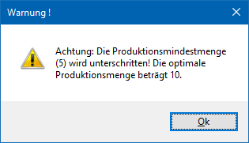
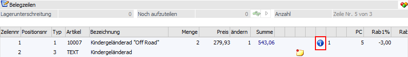
Unterschreitung beim Einlesen eines Produktionsauftrages
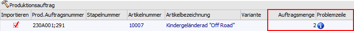
Je nach Einstellung in den PPS-Parametern ist:
ü diese Unterschreitung erlaubt
ü diese Unterschreitung erlaubt, es wird jedoch eine entsprechende Meldung ausgegeben
ü diese Unterschreitung nicht erlaubt.
Ø Variantenvorschlag
Für Produktionsartikel kann in diesem Eingabefeld eine Variante bzw. ein "Variantenstring" in Verbindung mit der zugewiesenen Produktionsstückliste hinterlegt werden. Dieser String wird für Produktionsartikel vom Typ "1 - Auftragsbezogene Produktion/Bestellung" in den folgenden Fenstern, automatisch beim Erfassen des Artikels, vorgeschlagen:
ü Belegerfassen (Kundenauftrag)
ü Bestellvorschlag bearbeiten
ü Produktionsvorbereitung
ü Expressendmeldung
Kostenträgerrechnung
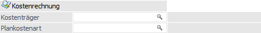
Ø Kostenträger
Wird hier ein Kostenträger eingegeben, wird dieser in der Belegerfassung für die Kostenrechnungsbuchung vorgeschlagen.
Ø Plankostenart
An dieser Stelle kann die Plankostenart für die Zeiterfassung (WinLine FAKT - Erfassen - Projektverwaltung - Zeiterfassung) hinterlegt werden.
Ersatzartikel
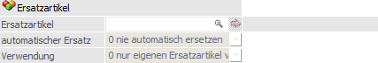
Ø Ersatzartikel
Im Feld "Ersatzartikel" wird der Ersatzartikel eingegeben, der immer als erstes vorgeschlagen wird und somit die Priorität 0 hat.
Durch Anklicken des Buttons können weitere Ersatzartikel
mit verschiedenen Prioritäten in einer Tabelle eingetragen werden (nähere
Informationen entnehmen Sie bitte dem Kapitel Ersatzartikelnummer).
Hinweise
Für Handelsstücklistenartikel können keine Ersatzartikel eingetragen werden.
Ø automatischer Ersatz
Über die Option "automatischer Ersatz" kann definiert werden, wie die Funktion des Ersatzartikels verwendet werden soll, wobei folgende Optionen zur Auswahl stehen:
ü 0 - nie automatisch
ersetzen
Wenn diese Option hinterlegt ist, dann verhält sich das Programm so,
als ob kein Ersatzartikel hinterlegt wäre. Wenn allerdings in der
Belegbearbeitung der Button "Artikel ersetzen" angeklickt wird, wird das Fenster
"Ersatzartikelnummer - Auswahl" geöffnet und ein Ersatzartikel kann ausgewählt
werden.
ü 1 - immer automatisch
ersetzen
Wenn diese Option hinterlegt wird, dann wird in der Belegbearbeitung
der Artikel sofort automatisch ersetzt, wobei eventuell vorhandene
Weiterverzweigungen mit berücksichtigt werden. Wird ein Artikel mit dieser
Option im Artikelstamm aufgerufen, dann erfolgt die Abfrage, oder der
"Originalartikel" oder der "Ersatzartikel" aufgerufen werden soll.
ü 2 - fragen
Ist diese Option
einstellt, dann wird bei jeder Aktion gefragt, ob der Artikel ersetzt werden
soll oder nicht.
Ø Verwendung
Mit dieser Option kann gesteuert werden, wie die Ersatzartikel verwendet werden sollen:
ü 0 - nur eigenen Ersatzartikel
verwenden
Wenn diese Option eingestellt ist, dann kann nur eine Ebene eines
Ersatzartikels verwendet werden.
ü 1- bis zum letzten Ersatzartikel
suchen
Bei dieser Option können Ersatzartikel auch kaskadiert werden, d.h. es
können mehrere Ebenen von Ersatzartikeln verwendet werden. Bei dieser Variante
wird auch geprüft, ob der Ersatzartikel ggf. auf sich selbst verweisen würde -
in dem Fall wird eine entsprechende Fehlermeldung angezeigt.
Beispiel
Beim Artikel A wird der Ersatzartikel B hinterlegt, beim Artikel B wird der Ersatzartikel C hinterlegt. Wird jetzt der Artikel A aufgerufen, wird der Artikel C verwendet.